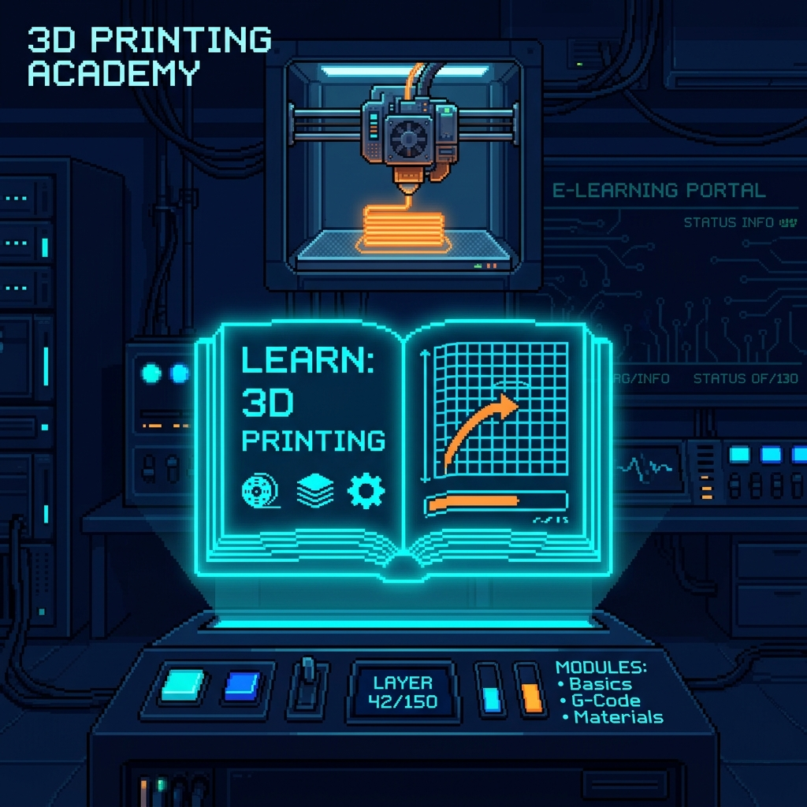
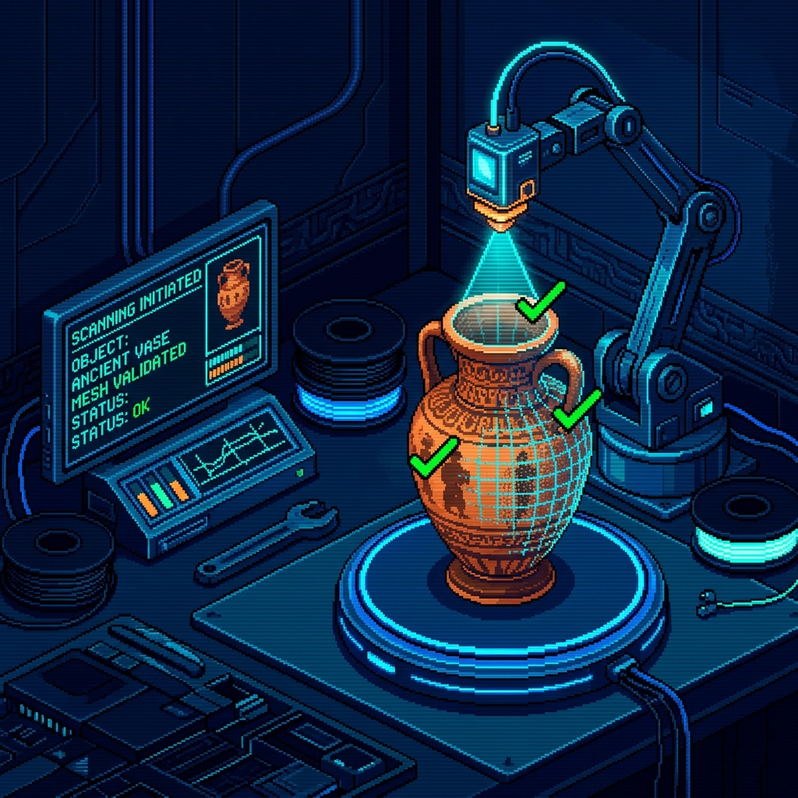
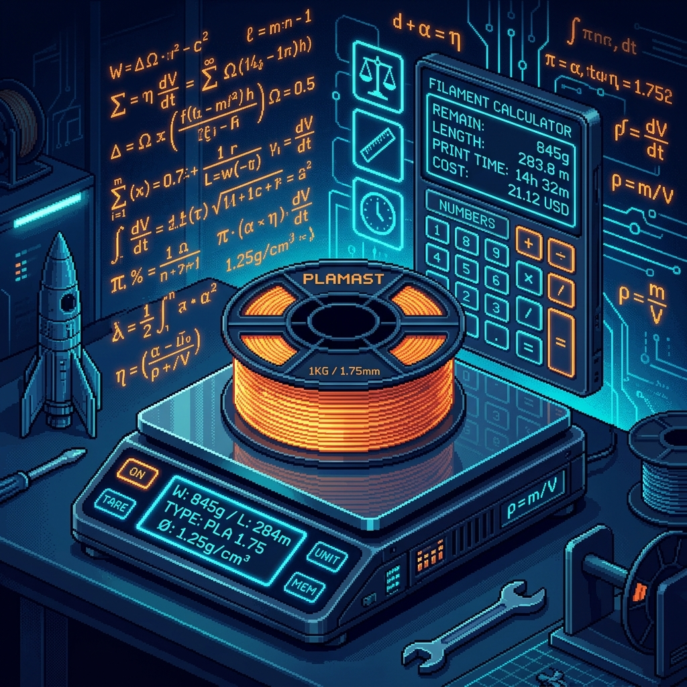

3D-Druck Lernlandschaft
Kreative Lernlandschaft und E-Learning-Plattform. Lernen Sie Kernbegriffe wie Slicing kennen, erkunden Sie den Bambu Lab X2D und vertiefen Sie Ihr Wissen mit geführten Lernvideos und Tutorials.


3D-Workflow-Assistent
KI-gestützter Leitfaden zur Reproduktion antiker Objekte des Rätischen Museums. Führt Sie Schritt für Schritt durch die Objekterfassung, Preset-Auswahl und generiert optimale Slicing-Parameter für den Bambu Lab X2D.

Filament-Skalierungsrechner
Präzisions-Kalkulator zur exakten Anpassung des Modellgewichts. Berechnet die dreidimensionale Skalierung basierend auf der kubischen Wurzelformel und gleicht sie mit Filamentdichten und STL-Volumen-Simulanten ab.